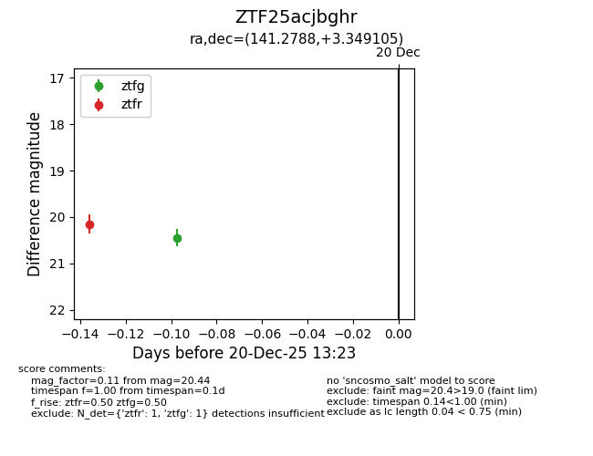
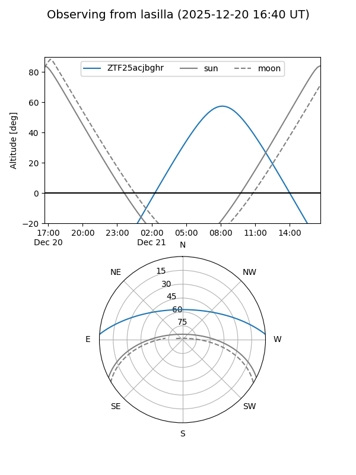
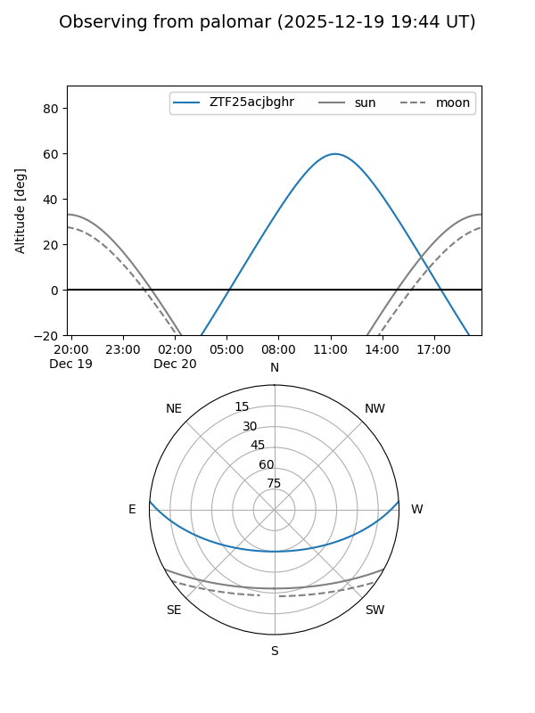

ZTF25acjbghr
Target ZTF25acjbghr at 2025-12-20 11:59
Aliases and brokers:
FINK: fink-portal.org/ZTF25acjbghr
Lasair: lasair-ztf.lsst.ac.uk/objects/ZTF25acjbghr
ALeRCE: alerce.online/object/ZTF25acjbghr
alt names
ZTF25acjbghr (ztf,fink_ztf)
Coordinates:
equatorial (ra, dec) = 141.2788,+3.34910
equatorial (HMS+DMS) = 09:25:06.91,+03:20:56.78
galactic (l, b) = (229.3777,+35.36217)
Flags:
Photometry:
last ztfr=20.15
1 ztfr detections
Lightcurve

Visibility


Additional plots